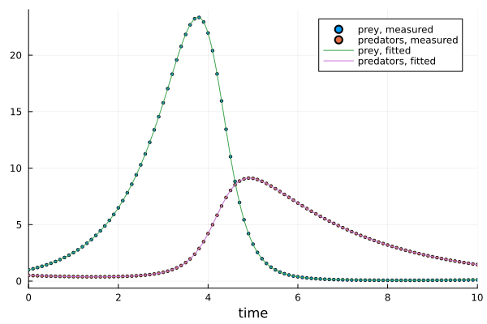

Getting started
This page fits a model to data from start to finish. Most of the time it takes is Julia installing and compiling packages.
Installing
You need Julia 1.12 or later. The package is not in the General registry yet, so add it from GitHub, along with ModelingToolkit, which models are written in:
using Pkg
Pkg.add(url = "https://github.com/orebas/ODEParameterEstimation.jl")
Pkg.add("ModelingToolkit")The whole thing
using ODEParameterEstimation, ModelingToolkit
using ModelingToolkit: t_nounits as t, D_nounits as D
# A predator-prey model with four unknown rates.
@parameters α β γ δ
@variables prey(t) predators(t) y1(t) y2(t)
@named lotka_volterra = System([
D(prey) ~ α * prey - β * prey * predators,
D(predators) ~ δ * prey * predators - γ * predators,
], t)
# Both populations were counted. Here the counts are simulated from known values.
problem = ParameterEstimationProblem(lotka_volterra, [y1 ~ prey, y2 ~ predators];
true_values = [α => 1.1, β => 0.4, γ => 0.4, δ => 0.1, prey => 1.0, predators => 0.5])
problem = sample_problem_data(problem; datasize = 101, time_interval = [0.0, 10.0])
results = estimate(problem)
results[1]ParameterEstimationResult
Parameters
α = 1.1
β = 0.4
γ = 0.4
δ = 0.1
Initial conditions (t = 0)
prey(t) = 1
predators(t) = 0.5
Fit error: 7.12e-26The estimates are the values the data were simulated from.
What each part does
The model is an ordinary ModelingToolkit System. t is time and D is the derivative with respect to it. If you have a model written for simulation with ModelingToolkit, you can pass that same system.
The measured quantities, [y1 ~ prey, y2 ~ predators], say what was observed. Each left-hand side is a name you choose for one series of measurements. Each right-hand side says what that series measures. It does not have to be a single state: if only the total number of animals had been counted, you would write [y ~ prey + predators].
The data here come from sample_problem_data, which simulates the model with the true_values and records the measured quantities at 101 times. With real measurements you skip both and pass the numbers themselves:
problem = ParameterEstimationProblem(lotka_volterra, [y1 ~ prey, y2 ~ predators];
data = (t = times, y1 = prey_counts, y2 = predator_counts))estimate returns a vector of results, best fit first. There is usually one. More than one answer explains when there are several.
The first time a model is estimated in a Julia session, Julia compiles code for that model. For this one that takes under a minute. Calling it again takes seconds, with the same data or with new data.
Reading the result
A result prints its values, and you can take them out one at a time or all together:
best = results[1]
best[α]1.0999999999999925best.parametersOrderedCollections.OrderedDict{Symbolics.Num, Float64} with 4 entries:
α => 1.1
β => 0.4
γ => 0.4
δ => 0.1best.states holds the initial conditions in the same form. Both are dictionaries keyed by the symbols of your model.
Seeing the fit
To see how well an estimate explains the data, simulate the model with it and draw both. This is plain ModelingToolkit, OrdinaryDiffEq and Plots, which you may need to add first:
using OrdinaryDiffEq, Plots
fitted = solve(ODEProblem(mtkcompile(lotka_volterra), merge(best.states, best.parameters), (0.0, 10.0)), Tsit5())
data = problem.data_sample # the simulated measurements
scatter(data["t"], [data[prey] data[predators]]; label = ["prey, measured" "predators, measured"], markersize = 2)
plot!(fitted; idxs = [prey, predators], label = ["prey, fitted" "predators, fitted"], xlabel = "time")
Where next
- Your own data: vectors, tables, and series measured at different times.
- Noisy data: what to expect when the measurements are not exact, and what helps.
- More than one answer: models where the data allow several parameter sets, or leave some parameters open.
- Which models work: the kinds of equations the method can handle.